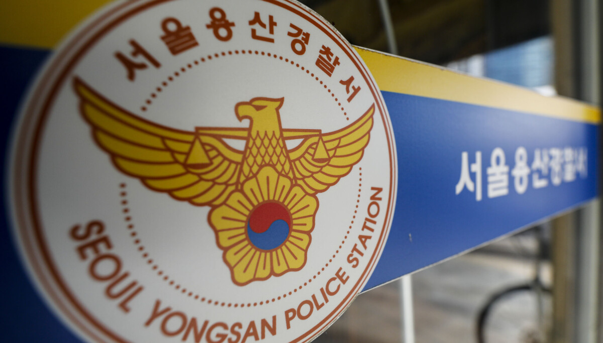
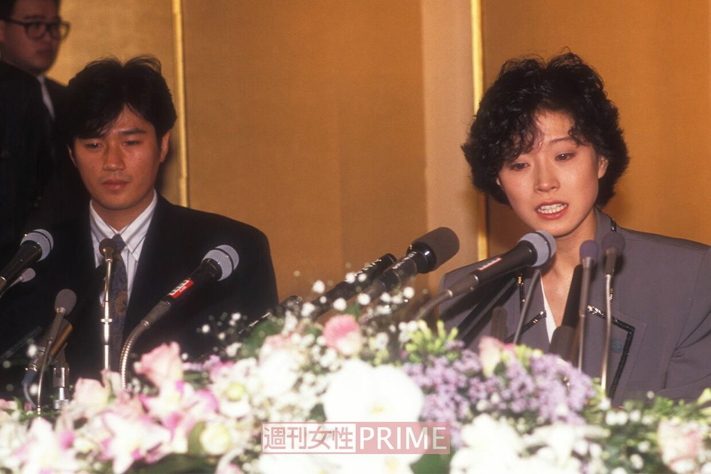
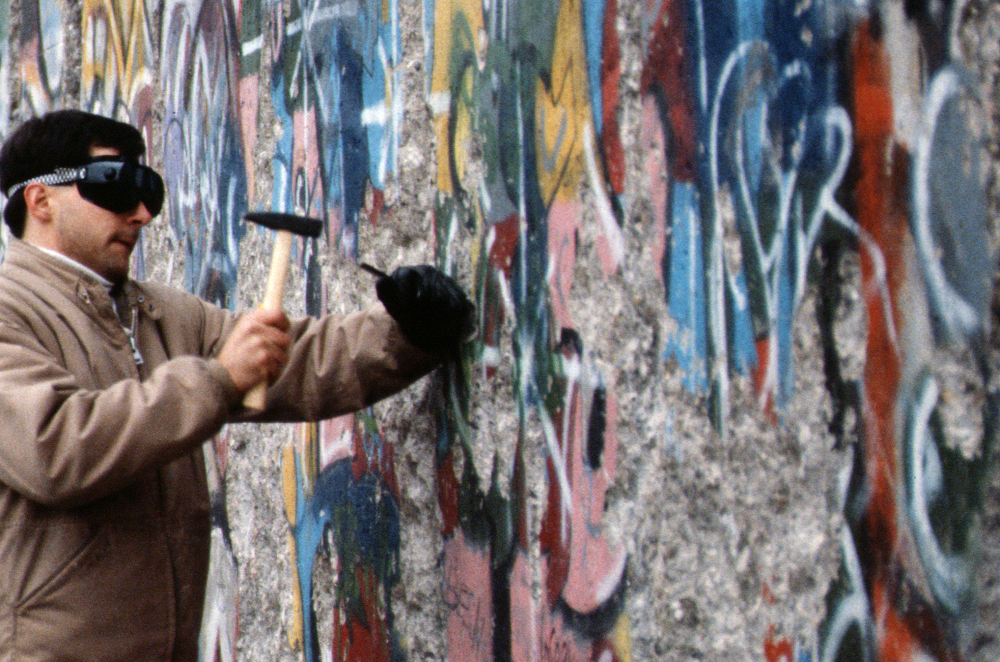
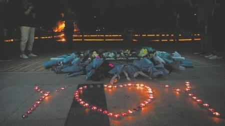

任何不尊重生命、不敬畏死亡的人，是不配被称为“人”的，它们或被某种极端的立场裹挟了情绪、变成维护群体优越激情的恶魔，或单纯不经思考、仅凭某种自我选择的意识本能行事，变成了食人血肉的可怖怪兽。
悲剧与旁观者
2026年8月5日，26岁的日本女性mina于韩国首尔某家酒店内进行tiktok直播时上吊自杀，接到报警的警察赶到酒店时mina已确认死亡。
对于一场彻头彻尾的悲剧，我不愿意回忆那些导致一个年轻生命逝去的细节，但为了保证叙述的连贯，还是先交代清楚前因后果：mina是日本偶像歌手西村力的一位资深粉丝，在某场演唱会中，mina试图将自己买给偶像的花抛向台上送给他们，这一行为引起了西村力的不满，认为mina干扰了演唱会的正常秩序，并在事后开启直播，在并未提及mina本人任何信息的情况下表达了对之前演唱会“事故”的抱怨。然而这一行为在他的其他粉丝眼里被解读为“偶像受了委屈”、“有人伤害了我的偶像”，之后他们一致把矛头指向了在演唱会上抛花的mina，尽管西村力并没有指名道姓。紧接着，一场充斥着极端恶意、完全丧失人类道德底线的网络暴力彻底摧毁了mina的生活，终于mina在长久的恶意包围下失去了活下去的希望，在直播中结束了自己的生命。
过去我们习惯于把日本高度关注他人自身道德行为的压力社会与高自杀率绑定，但mina的事件并不是与之相关的社会性事件，至少我不愿意把它归类为已经分析过无数相似案例的社会心理范式的又一案例来看待，这种宏观的范式所强调的是社会成员在集体生活中形成了怎样的路径依赖和社会文化，本质是在解析自杀率高居不下这个既有现状的原因，却似乎并没有讨论社会结构、暴力与受害者之间的责任划分关系。
因此，如果只是继续按照过去的方法，把她的死因归结于所谓社会压力或者某些极端分子的伤害、甚至反过来追究mina本人的责任，指责她脆弱、承受能力差，那这无疑是人道主义的缺位，是多数暴政的灾难降临在个人身上，将她压得粉身碎骨，而我们却视而不见。
对此我无疑是愤怒的，这种烧满胸膛的愤怒在我过去二十年的人生里都非常罕见，我痛恨那些深埋在人类文明外壳下极端丑恶的暴行，它自发地从集体行动中汲取力量，形成一股足以生吞活剥一个人类个体的恶意。而最令我毛骨悚然、怒不可遏的是，这股恶意当着所有人的面犯下谋杀罪，却可以悄悄躲回无数个“正义使者”背后，天然地拥有不在场证明，逃脱了任何一场可能发生的审判，若无其事地回归到社会中去，甚至挑衅公众的良知、嗤笑司法的无能，好像他们是刚打完胜仗凯旋的英雄，而那个原本拿到了韩国留学申请，准备开启全新人生的鲜活生命，成为了整个事件中承担了一切成本的“弥赛亚”，成为了献祭给身份政治的贡品，成为了平息这场滔天恶意唯一的答案。
报道资料图 · 拍摄日期未注明

冷漠的回声
1989年7月11日，23岁的日本歌手中森明菜在距离自己24岁生日仅剩两天的日子，于东京六本木的公寓中割腕自杀。所幸伤口不深，昏迷后的中森明菜很快被发现送医，保住了生命。mina的事件与中森明菜颇有类似之处，都因为一个男性偶像而起，与中森明菜发生纠葛的近藤真彦是隶属于美国华纳公司、日本杰尼斯偶像事务所的艺人，在商业合作中与明菜结识，并发展出了名义与事实上的恋爱关系。但与此同时，近藤真彦还与另一位当红的日本歌手松田圣子、以及中国香港女星梅艳芳都存在事实上的暧昧关系，这一不耻行径同时让三位女性受伤，其中松田圣子较为洒脱坚强，迅速断绝了与近藤真彦的任何来往；而梅艳芳与中森明菜深陷感情痛苦难以自拔，最终近藤真彦公开否认了对明菜的婚姻承诺（也没有选择梅艳芳，而是和另一名日本女性结婚），明菜因此伤心欲绝，选择割腕自杀。
这个事件无论怎么看待都是道德败坏的人渣单方面对他人造成了巨大伤害，然而当时的日本社会对于此事的普遍态度却是：认为作为公众人物、影响力巨大的中森明菜选择割腕是对社会不负责任的体现，是给民众添麻烦的行为。这种整个社会几乎形成默契的冷漠让我大为震惊。
两个事件发生的本质原因实际上没有太多重合的地方，但却反映出了同一个时代性的困境：作为社会成员的大家究竟是出于什么理由，在未经组织、宣传和动员的情况下自发选择了发动多数暴政、对一个人莫须有的罪名发起冲锋与审判的呢？
历史照片 · 1989.12.31

身份与群体
恰是明菜事件发生的1989年，苏东阵营解体，冷战结束，世界范围迎来了所谓第三波民主化浪潮，获得作为政治权力的民主开始被普遍地认为是现代化的一个必然要求，于是，无关信仰、无关经济条件、无关发展程度、无关人种与民族，几乎全世界各地都不约而同地发生了烈度不一的身份政治革命，远在欧洲的白人青年可以远赴伊斯兰地区参与“圣战”，911事件的发生，卢旺达大屠杀引起的非洲大战、巴以冲突等等，一系列事件都在说明现代社会的矛盾已经不再以利益，尤其是经济意义上的利益为冲突核心了，国家能力和社会约束的缺失放大了另一种被广泛关注的问题：在经济、资源以外的维度，我们究竟作为什么身份活着？这种身份如何塑造我们的行为？这个问题一出现就以空前高涨的热情和恐怖的速度蔓延至各个国家、各个民族的社会意识，于是人们意识到：我们需要一种身份，一种不以世俗利益为追求的身份，只有当自己被承认为这个身份内的一员，才能够确认自己存在的尊严得到了认可。

回到2026年的今天，全球范围内的民主化运动烈度平息了不少，但身份认同和身份政治没有消失，反而以一种更为隐蔽、更不易被察觉的方式潜伏进了社会底层，这里的底层不是阶级意义上以资产划分的底层，而是指宏观社会结构之下与人的具体生活息息相关的底层问题，比如衣食住行、运动娱乐等等。也就是说，随着社会生活的原子化，身份的含义也随之变得原子化，比如：mbti、星座、地域等等，这些身份在构造了一种社交机制的同时也重新暴露了“优越激情”的问题，这个词源自福山在《身份政治》中描述的两种具体表现机制，优越激情则指：人有被承认为高其他人一等的渴望与倾向，这种承认需要身份的确认来获取。几个具体的例子：听古典、爵士、摇滚的人认为喜欢说唱、流行、口水歌的人低自己一等；喝手冲和现磨咖啡的人认为喝速溶、瑞幸库迪的人低自己一等；玩单机、主机游戏的人认为玩手游的人低自己一等......这些都是不同群体构建自己优越身份的表现。
然而以上种种例子仅能说明优越激情本身存在，远远没有上升到身份政治革命的烈度，所以回到mina自杀的事件上来讨论，就可以建立起一种亟须被重视的新模型：饭圈文化的党同伐异。
身份政治的恶魔
有人把mina的死因直接归结于西村力作为公众人物的不负责任，但实际上他仅仅是这场谋杀中最不值一提的帮凶，他是递“刀”者，真正持“刀”杀人者另有其人。在此我无意攻击任何理性、善良的粉丝群体，相信你们也不愿意被与丧失良知、实施暴力的“粉丝”混为一谈，所以接下来的分析中提到的“粉丝”都特指使用网络暴力行为致使他人失去生命的极端群体，而非不加区分地全面开炮。
饭圈文化的行为逻辑一定程度上与宗教的运行模式一致，偶像本人是圈内成员集体朝圣的直接对象，一系列约定俗成的规则、行为准则都围绕着他来建立，粉丝需要对他负责但他不需要对粉丝负责，这种权力构成是单向的，且绝大多数情况下是自发的、甚至无意识的，这也是饭圈真正区别于宗教的地方。对于教皇而言，他的合法性直接来源于信徒对教义的认可，因此虽然教皇拥有对信徒一切事务的绝对权力，但他也为自己的信徒负责，他的权力合法性、税收、制度的维护实际上依赖信徒存在，对于信徒而言，信教本身是生活需要的一部分，在宗教革命和《哈布斯堡合约》签订以前，教权远远凌驾于世俗王权之上，教皇拥有军队、财政权力、领土、属民等政治意义上的国家所具备的一切要素，因此信教的本质就是认可教皇的统治权。这同时也是利益需求于身份认同的需求之间的差异：粉丝需要“拥戴偶像”这个身份来使自己和其他人区别出来，即使他们本身并不必然从偶像那里获得实际利益；信徒本身不一定需要“信教”这个身份，他们只有这样才能获得物质利益，所以发生在上世纪的伊斯兰“圣战”与17世纪的宗教战争有明显区别，但却和饭圈的行动逻辑基本一致。
所以，由于粉丝群体的自发性，他们根本不需要偶像本人进行任何动员或引导，甚至他们根本不需要这个偶像真的存在，只要有这样一个符号，他们就会为了维护符号的“纯洁性”而自发行动，西村力在直播中有意无意透露出来的“不满”与“抱怨”就是符号本身发出的一种信息素，这种信息素让粉丝们产生了“纯洁性遭到侵犯和破坏”的条件反射，于是征伐与攻击就自发地、集体性地开始了。
私信侮辱与谩骂只是最轻微不过的伤害，他们扒出mina及其家人的真实姓名、具体住址、工作单位等私人信息，通过线上与下线两种方式进行种种令人发指的迫害，p图、造谣、恐吓、泼油漆等等，完全剥夺了mina作为一个社会自然人所具备的一切合法权利，即便mina在社交平台发文道歉，将本不属于自己的责任都揽到自己身上试图平息众人的愤怒，但这并不能让他们满足，无辜的妥协换来的是恶意曲解与更加极端的报复行为。最终，mina彻底失去了生活下去的动力。
然而最诡异的并不是攻击行为本身，而是这种征伐与攻击的本质原因并不是他们认为偶像受到委屈、需要为他打抱不平，而是他们需要这场战争来佐证自己的粉丝身份，这种征战让他们得到一种确认感：我是爱他的、我的行为是正义的、我攻击得越狠，我的粉丝身份就越得到认可，这样，我就真正区分于那些“愚昧”的普通人，甚至区分于其他攻击烈度不如自己的粉丝。
在这种作用机制的推动下，中立、理性会使身份受到质疑和否定，于是，身份政治恐怖的一面裹挟着所有粉丝走向了战争，而可怜的mina则是成千上万的“朝圣军团”需要面对的唯一的“敌人”，他们把撕碎、消灭一个普通人、一个无辜的人、一个为他们的偶像投资消费远超他们很多的人，包装成了正义，粉饰成了荣耀，他们戴着神圣的面具，伪装成天使，却无法掩盖面具背后令人作呕的腐臭与血腥，无法掩盖他们张着血盆大口的身份政治恶魔的本质。
“一个普通人被逼死的故事，有什么诗意和浪漫可言？！”
无知的怪兽
在身份政治的恶魔身后还存在着另一批推波助澜的施暴者，与前者不同，他们并非抱有巨大的恶意，也并非为了维护某个事物，事实上，他们什么理由都不需要就可以参与进这场围困猎杀，因为他们根本不思考，与其说没有人性和良知，这些人更像是没有辨别是非的能力，他们并不在乎是非对错，只是单纯出于无知和愚昧的驱使，就让他们也变成了吃人的怪兽，这是汉娜阿伦特所说的“平庸之恶”，他们足够平庸，足够无知，所以变得盲目痴愚，他们不在乎生命将会走向什么结局，在他们眼中，不过是几条起哄的评论，不过是几句幸灾乐祸的调侃，能有什么大不了的呢？
你们把生命当成什么了？
2018年6月20日下午，甘肃省庆阳市第六中学女学生在丽晶百货大楼楼顶跳楼自杀，她并非一瞬间毫无犹豫地跳下，而是经历了长达多个小时的内心纠结，最终失去希望选择跳下，消防员尽力救援最终失败，他哭得撕心裂肺，谴责自己的过失，然而最终杀了她的真的是她在校园遭受的伤害吗？
在她站上楼顶的那一刻起，围观和议论的人群就从未散去，甚至越来越多，他们纷纷开启直播，生怕错过这个赚取流量的大好机会，然而他们的言辞并没有单纯停留在对跳楼与轻生的讨论，“你到底跳不跳啊？我都等好久了！”“你根本就不敢跳吧，来这博眼球来了！”“懦夫！胆小！要跳就赶紧跳啊！”他们把一个活生生的人即将走向末路的悲剧渲染成了一场“真人秀”，他们不知道事情的来龙去脉，他们也不在乎事情的来龙去脉，在这些人眼中，那个女生不过是马戏团里踩独轮车的猴子，是供人取乐的小丑，她经历了什么与我何关呢？能有什么大不了的呢？
她之所以能在登上楼顶几个小时后才跳下，不是因为她博眼球、胆小，而是她试图向社会寻求善意，她是在求救，她仍有想要活下去的愿望，但她的求救没有换来多少善意的劝阻，反而让她以为所有人都不想让她活下去。
现场照片 · 2018.06.26

mina又何尝不是呢？她开启直播只是为了让自己死去的过程变成供人欣赏的表演吗？她只是不断地重复着几个简短的句子：“怖い、怖い、もう一度生きてみたい。見てくれてありがとう、生きないよ、もう......（好可怕,好可怕...我还想多活一会...谢谢大家来看我，我已经活不下去了...）
这也是在求救啊！这是万念俱灰之人最后的求救啊！然而直播间的谩骂、嘲讽、侮辱依然一刻也没有停下来，寥寥几条安慰和维护她的评论在巨大的信息洪流疯狂冲刷下仅仅只停留了几毫秒就被不可阻挡的恶意吞没，根本没有机会送到她眼前。就这样，她颤颤巍巍地站起身，半蹲着将自己的脖子挂在绳子上，窒息而死，而这个姿势只要她愿意站起来就能活下去，但她没有选择这样做，就这样离开了这个世界。
即便事情已经过去了一周的今天，对她的恶意也并未完全平息，不止是日本或韩国，中国的社交媒体平台也有不少冷嘲热讽、幸灾乐祸的声音，把mina的死定性为“饭圈粉丝的咎由自取”。更有甚者把mina去世的直播录像当成花边新闻一样的商品售卖，这就是无知者傲慢的恶，比起人类历史是任何一场惨绝人寰的暴行都有过之而无不及。
你们凭什么居高临下地对一条生命指手画脚？！你们凭什么对他人的死指指点点？！你们有什么资格指责别人的生命没有价值？！你们自己不也深陷渴求身份认同的泥淖里无法自拔吗？自诩为“清醒者”、“正常人”的你们不也一样要面对死亡吗？！不敬畏死亡、不尊重生命的人，根本不配称为是“人”，你们只不过是一头头凭着简单的本能和可怜的优越感盲目活着的怪兽罢了！你们吞吃别人的血肉、践踏别人的尊严，却只敢躲在别人看不到的地方释放自己的恶意，毫无人性与良知可言！
回到生命本身
到这里，我的愤怒已经彻底蒙蔽了我的理智，可我又什么都做不了，再义正词严的话语都无法真正制裁那些杀人犯，再痛彻心扉的悼念也无法挽回一条生命消逝的事实，我唯一能做的事情只有愤怒而已。曾经我也站在L的角度考虑，否定死亡笔记的积极意义，但现在我反倒比谁都希望死亡笔记和夜神月真的存在，然后将那些施暴者一个不留的全部制裁。
可如果那样做，我又与那群恶魔和怪兽有什么区别呢？
汉娜阿伦特在《人的境况》中描述了一种“有死性”：“人的有死性在于这一事实：个体生命以一个从生到死的可辨认的生活故事，从生物生命中凸显出来。个体生命以它的垂直运动轨迹，即切断生物生命循环运动的轨迹，把自己从所有其他事物中区别了出来。这就是有死性：在一个凡运动的万物都做圆周运动的宇宙中，以直线运动。”
生命并非是简单的物理存在，正因为人的生命有限、人存在“有死性”，所以我们才真正区别于永恒的事物、有价值和意义地活着。真正的生命是生活故事拼凑起来的个人的“历史”，你的饮食、你的学习与工作、你的痛苦与快乐、你的价值与尊严，以及你最终要面对的死亡，这些要素共同构成了一个真实的人，我们常常诘问：什么样的人生才算有意义呢？什么样的生命才值得珍惜呢？要功成名就吗？要腰缠万贯吗？要万人景仰吗？深究意义本就是对生命意义的亵渎。一个人并不必然要万众瞩目，并不必然要富可敌国，只要他尊重生命，并按照自己所热爱的方式过完了哪怕平淡的一生，那这样的生命就是有价值的，你不必向任何人证明自己的价值，因为你的尊严与价值并不由某个被承认的身份赋予，他人的冷嘲热讽也罢、阿谀奉承也罢，都是外部世界对于你的主观反馈，并不构成真实的你自己。
所以，要从萨特的“他人地狱”中走出来，一定不要轻易放弃自己的生命，这样正中了那些无休止的恶意与嘲讽的下怀，努力活着，就是对他们最大的蔑视。
报道与延伸阅读
回到报道发生的时间，辨认事实、回忆与评论。以下为网站补充的阅读资料，原文保留作者的表达。
报道引述警方，确认一名二十多岁的日本女性在首尔住所死亡，警方正调查经过。报道未公开网名，也未确认文中关于饭圈冲突和具体责任人的完整叙述。
Korea JoongAng Daily 韩文报道中的警方信息以匿名 A 某称呼当事人，报道其日本国籍、网红身份与警方调查进展。可与英文报道对照阅读。
한국경제 记者回顾中森明菜与金屏风记者会石川敏男回顾 1989 年的事件与同年 12 月 31 日的记者会。这是多年后的回顾报道，阅读时应区分现场事实、回忆与评价。
FRIDAY 庆阳事件：悼念与家属讲述报道市民献花悼念、家属回忆及围观者起哄情况。家属讲述与当时警方处理信息分别呈现。
华西都市报—封面新闻 / 中新网 庆阳事件通报与围观者处理记录 6 月 25 日通报中的调查信息，以及两名起哄者当时受到行政拘留的情况。处理进展以该报道时间为准。
财新本文为作者评论，按所提供原稿收录；阅读分节、配图和图注为网站编排。文中包含对自杀事件与网络暴力的讨论。